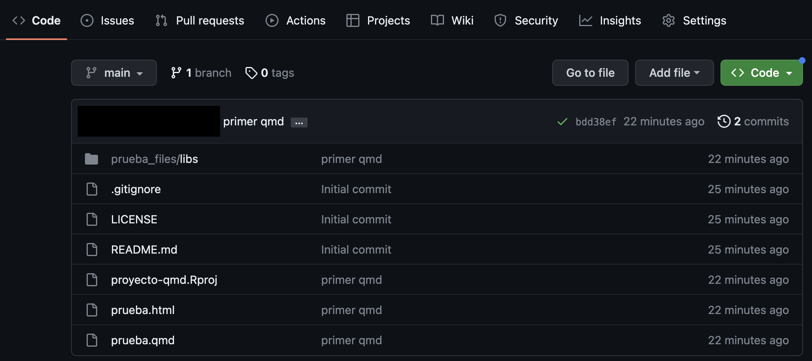

Análisis y visualización de datos con R
Simulación (IMAD743)
¡Bienvenidos al curso de Simulación!
Dejad Excel a un lado
¡Hola a todos!
Diego Paúl Huaraca Shagñay
Ingeniero Matemático. Escuela Politécnica Nacional (2013).
Máster en Ciencias Actuariales y Financieras. Universidad de Alcalá (2018).
Consultor Analítico de Riesgo Financiero. BI-SCIENCES (desde 2018).
Docente del Departamento de Matemática. Escuela Politécnica Nacional (desde 2018).
Consultor Actuarial. Superintendencia de Bancos (desde 2022).
Contenido del curso

Introducción al Lenguaje R →
{a programar se aprende programando}.Análisis de datos →
{tibble, dplyr}.Visualización de datos →
{gráficos estáticos y dinámicos}.Desarrollo de aplicativos web →
{shiny, shinydashboard}.Reportería dinámica →
{LaTeX, rmarkdown, Quarto}.Simuladores de números aleatorios →
{base}.
Contenido del curso
Simulación de variables aleatorias →
{discretas y continuas}.Simulación de vectores aleatorias.
Simulación de procesos estocásticos →
{Markov, Weiner, etc.}.Métodos de MonteCarlo →
{secuenciales, inferencia estadística}.Técnicas de Remuestreo.
Métodos de MoteCarlo en Cadenas de Markov
Aplicaciones avanzadas →
{simulación por eventos}.
Instalación del Lenguaje R
Instalando R y RStudio
Requisitos
Para el desarrollo del curso se requiere:
Conexión a internet (para la descarga de paquetes y bases de datos).
Descargar R: La descarga se realiza (gratuitamente) desde el enlace: https://cran.r-project.org/
Descargar RStudio: La descarga se realiza (gratuitamente) desde el enlace: https://posit.co/download/rstudio-desktop/


Instalación de R
Paso 1: Ingrese al repositorio CRAN en https://cran.r-project.org/ y seleccione su sistema operativo.
Paso 2: Para el sistema MacOs basta con hacer click en R-4.X.Y.pkg, y abrirlo una vez descargado. Para el sistema Windows, basta con hacer click en install R for the first time y después en Download R-X.Y.Z for Windows, una vez descargado, abrirlo como cualquier archivo de instalación.
Paso 3: Abrir el ejecutable e instalar el programa con todas las opciones por defecto.
Importante
Siempre que tengas que descargar algo del repositorio CRAN (ya sea el propio R o un paquete), asegúrate de tener conexión a internet.
CRAN
El lenguaje R se distribuye gratuitamente a través del repositorio Comprehensive R Archive Network (CRAN) propiedad de la R Foundation for Statistical Computing.
El mantenimiento se encuentra a cargo del grupo R Core Team asistido por una gran cantidad de colaboradores internacionales.
Con la finalidad de evitar el colapso del mundo estadístico, el repositorio CRAN se refleja en diferentes lugares de todo el mundo
Funcionamiento
R es un lenguaje orientado a objetos diseñado en un entorno auténtico bajo el cual esconde su simplicidad y flexibilidad, lo cual permite a sus usuarios añadir funcionalidad mediante la definición de nuevas funciones y operadores.
R almacena sus variables, datos, funciones y resultados en la memoria activa (RAM) del computador en forma de objetos con un nombre específico y pueden ser modificados o manipulados por el usuario.

Primera operación
Para comprobar que se ha instalado correctamente, tras abrir R, deberías ver una pantalla blanca similar a esta.
Esa «pantalla blanca» se llama consola y podemos hacer un primer uso de ella como si se tratase de una simple calculadora.

Idea: a una variable llamada a le asignaremos el valor de 3 (escribiremos el código de abajo en la consola y daremos «enter»)
Primera operación
Para comprobar que se ha instalado correctamente, tras abrir R, deberías ver una pantalla blanca similar a esta.
Esa «pantalla blanca» se llama consola y podemos hacer un primer uso de ella como si se tratase de una calculadora.
Idea: definiremos otra variable llamada b y le asignaremos el valor 5
Fíjate que…
En R usaremos <- como una flecha: la variable a la izquierda de dicha flecha recibe el valor que hay a la derecha (por ejemplo, a <- 3)
Primera operación
Para comprobar que se ha instalado correctamente, tras abrir R, deberías ver una pantalla blanca similar a esta.
Esa «pantalla blanca» se llama consola y podemos hacer un primer uso de ella como si se tratase de una calculadora.
Idea: haremos la suma a + b y nos devolverá su resultado
Instalación de RStudio
RStudio será el Bloc de Notas que usaremos para escribir los códigos (lo que se conoce como un IDE: entorno integrado de desarrollo).
Paso 1: Ingrese a la página de Posit en https://posit.co/download/rstudio-desktop/ y seleccione la descarga gratuita.
Paso 2: Selecciona el ejecutable en función al sistema operativo que use.
Paso 3: Luego de la descarga, se apertura el ejecutable como cualquier otro programa y se instala todo por defecto.
Organización de RStudio
Al abrir RStudio seguramente tengas tres ventanas:
- Consola: es el nombre para llamar a la ventana grande que te ocupa buena parte de tu pantalla. Prueba a escribir el mismo código que antes (la suma de las variables) en ella. La consola será donde ejecutaremos órdenes y mostraremos resultados.

Organización de RStudio
Al abrir RStudio seguramente tengas tres ventanas:
- Environment: la pantalla pequeña (puedes ajustar los márgenes con el ratón a tu gusto) que tenemos en la parte superior derecha. Nos mostrará las variables que tenemos definidas.

Organización de RStudio
Al abrir RStudio seguramente tengas tres ventanas:
- Panel multiusos: la ventana que tenemos en la parte inferior derecha servirá para buscar ayuda de funciones, para visualizar gráficos, así como para la carga de librerías y navegación por las carpetas del CPU.

¿Qué es R? Primeros usos
¿Cuáles son las ventajas? Primer uso
¿Qué es R? ¿Por qué R?

¿Qué es R? ¿Por qué R?
R es el lenguaje estadístico por excelencia, creado por y para estadísticos/as, con 5 ventajas fundamentales frente a Excel:
Lenguaje de programación: la obviedad → análisis replicables
Gratuito: la filosofía de la comunidad de
Res el compartir código bajo copyleft → uso ético de dinero públicoSoftware libre: no solo es gratis sino que permite acceder libremente a código ajeno, incluso al propio código fuente → flexibilidad y transparencia
Lenguaje modular: hemos instalado lo mínimo, pero existen códigos de otras personas que podemos reusar (19430 paquetes al 28/04/2023) → ahorro de tiempo
Lenguaje de alto nivel: facilita la programación (como Python) → menor curva de aprendizaje
¿Por qué programar?
Automatizar → te permitirá automatizar tareas recurrentes (ejemplo: actualizar pronósticos del tiempo, actualizar informes estadísticos) de forma que solo tendrás que programarlo uno vez.
Replicabilidad → podrás replicar tu análisis siempre de la misma manera.
Flexibilidad → podrás adaptar el software a tus necesidades.
Transparencia → ser auditado por la comunidad.

Idea fundamental: paquetes
Una de las ideas claves de R es el uso de paquetes: códigos que otras personas han implementado para resolver un problema
Idea fundamental: paquetes

Una vez instalado, hay dos manera de usar un paquete (traerlo de la estantería)
- Paquete entero: con
library(), usando el nombre del paquete sin comillas, cargamos en la sesión todo el libro
Paquetes: Acceso a funciones

Una vez instalado y cargado el paquete, es posible indagar sobre las funciones que contiene a partir del comando ls("package:_____").
[1] "%>%" "boundary" "coll"
[4] "fixed" "fruit" "invert_match"
[7] "regex" "sentences" "str_c"
[10] "str_conv" "str_count" "str_detect"
[13] "str_dup" "str_ends" "str_equal"
[16] "str_escape" "str_extract" "str_extract_all"
[19] "str_flatten" "str_flatten_comma" "str_glue"
[22] "str_glue_data" "str_interp" "str_length"
[25] "str_like" "str_locate" "str_locate_all"
[28] "str_match" "str_match_all" "str_order"
[31] "str_pad" "str_rank" "str_remove"
[34] "str_remove_all" "str_replace" "str_replace_all"
[37] "str_replace_na" "str_sort" "str_split"
[40] "str_split_1" "str_split_fixed" "str_split_i"
[43] "str_squish" "str_starts" "str_sub"
[46] "str_sub_all" "str_sub<-" "str_subset"
[49] "str_to_lower" "str_to_sentence" "str_to_title"
[52] "str_to_upper" "str_trim" "str_trunc"
[55] "str_unique" "str_view" "str_view_all"
[58] "str_which" "str_width" "str_wrap"
[61] "word" "words" Carga de múltiples paquetes
En el caso que se requieran cargar varias librerías se puede evitar la ejecución de varias líneas de código a partir de la siguiente opción:
Con el fin de evitar cargar las librerías más utilizadas al arranque de cada sesión, se puede automatizar esta tarea a partir del archivo .RProfile
Respaldando información
Una tarea importante dentro del análisis de datos es el respaldo de información que se pueda dar sobre ciertos resultados obtenidos, en este punto R consta de dos comandos muy útiles: save y load.
El primero de ellos permite almacenar en disco los objetos que desee el usuario (almacenamiento parcial), dicho comando también puede ser configurado de tal manera que almacenen todos los objetos que se encuentra válidos en el área de trabajo.
vector <- c(1,2,3,4,5)
matriz <- matrix(c(1,2,3,4,5,6), ncol = 2)
# Si deseas guardar el objeto "vector" con el nombre "Respaldos"
save(vector, file = "Respaldos.RData")
# para el caso que se desee almacenar todos los objetos con el nombre "TotalRespaldos"
save(list = ls(all = TRUE), file = "TotalRespaldos.RData")Mensajes de error o advertencia
Durante tu aprendizaje va a ser muy habitual que las cosas no salgan a la primera → te vas equivocar. No solo será importante asumirlo sino que es importante leer los mensajes de error para aprender de ellos.
- Mensajes de error: precedidos de «Error in…» y serán aquellos fallos que impidan la ejecución
Antes de arrancar: scripts

Un script será el documento en el que programamos, nuestro blog de notas (aquí con extensión .R) donde escribiremos las órdenes. Para abrir nuestro primero script, haz click en el menú en File < New File < R Script.
Cuidado
Es importante no abusar de la consola: todo lo que no escribas en un script, cuando cierres, lo habrás perdido.
Ejecutando el primer script
Ahora tenemos una cuarta ventana: la ventana donde escribiremos nuestros códigos. ¿Cómo ejecutarlo?
- Escribimos el código a ejecutar.
- Guardamos el archivo .R haciendo click en
Save current document.
- El código no se ejecuta salvo que se lo indiquemos. Tenemos tres opciones:
- Copiar y pegar en consola.
- Seleccionar líneas y
Ctrl+Enter - Activar Source on save a la derecha de guardar: no solo guarda sino que ejecuta el código completo.
💻 Tu turno
Ejecuta tu primer script: crea un script de cero, programa lo indicado debajo y ejecútalo (de las 3 maneras posibles)
📝 Añade debajo otra línea para definir una variable b con el valor 5. Tras ello múltiplica ambas variables
📝 Modifica el código inferior para definir dos variables c y d, con valores 3 y -1. Tras ello divide las variables.
📝 Asigna un valor positivo a x y calcula su raíz cuadrada; asigna otro negativo y y calcula su valor absoluto con la función abs().
Toma nota
Comandos como sqrt(), abs() o max() son lo que llamamos funciones: líneas de código que hemos «encapsulado» bajo un nombre, y dado unos argumentos de entrada, ejecuta las órdenes (una especie de atajo).
Primeros datos: variables
¿Qué tipos de datos existen?
De la CELDA a la TABLA
¿Qué tipo de dato podemos tener en cada celda de una tabla?

- Celda: dato individual de un tipo concreto.
- Variable: concatenación de valores del mismo tipo (vectores).
- Matriz: concatenación de variables del mismo tipo y longitud.
- Tabla: concatenación de variables de distinto tipo pero igual longitud
- Lista: concatenación de variables de distinto tipo y distinta longitud
Celdas: tipos de datos
¿Existen variables más allá de los números?
Piensa por ejemplo en los datos guardados de una persona:
- A la pregunta «¿está usted soltero/a?» la respuesta será lo que llamamos una variable lógica (
TRUEsi está soltero/a oFALSEen otro caso).
- Su fecha de nacimiento será precisamente eso, una fecha.
Variables numéricas
El dato más sencillo (ya lo hemos usado) serán las variables numéricas
Variables de texto
Imagina que además de la edad de una persona queremos guardar su nombre
Las cadenas de texto son un tipo con el que obviamente no podremos hacer operaciones aritméticas (sí otras operaciones como pegar o localizar patrones).
Error in nombre + 1: non-numeric argument to binary operator
Recuerda que…
Las variables de tipo texto (character o stringr) van siempre entre comillas.
Primera función: paste
Como hemos comentado, una función es un trozo de código encapsulado bajo un nombre que depende de unos argumentos de entrada. Nuestra primera función será paste(): dadas dos cadenas de texto nos permite pegarlas.
Fíjate que por defecto nos pega las cadenas con un espacio, pero podemos añadir un argumento opcional para indicarle el separador
Primera función: paste

¿Cómo saber que argumentos tiene una función? Escribiendo en consola ? paste o alternativamente help("paste") te aparecerá una ayuda en el panel multiusos.
En dicha ayuda podrás ver en su cabecera que argumentos ya tiene asignados por defecto la función
Primer paquete: glue
Una forma más intuitiva de trabajar con textos es usar el paquete {glue}: lo primero que haremos será «comprar el libro» (si nunca lo hemos hecho). Tras ello cargamos el paquete
Con dicho paquete podemos usar variables dentro de cadenas de texto. Por ejemplo, «la edad es de … años», donde la edad está guardada en una variable.
Variables lógicas
Una variable lógica o binaria es aquella que toma dos valores:
TRUE: verdadero guardado internamente como un 1.FALSE: falso guardado internamente como un 0.NA: dato ausente son las siglas de not available.
Condiciones lógicas
Los valores lógicos suelen ser resultado de evaluar condiciones lógicas. Por ejemplo, imaginemos que queremos comprobar si una persona se llama Julia.
Con el operador lógico == preguntamos sí a la izquierda es igual a la derecha
Fíjate que…
No es lo mismo <- (asignación) que una comparación lógica con == (estamos preguntando).
Condiciones lógicas
Además de las comparaciones «igual a» frente «distinto», también comparaciones de orden como <, <=, > o >=.
¿Tiene la persona menos de 32 años?
¿La edad es mayor o igual que 38 años?
Variables de fecha
Un tipo de datos muy especial: los datos de tipo fecha.
Parece una simple cadena de texto pero representa un instante en el tiempo. ¿Qué debería suceder si sumamos un 1 a una fecha?
Variables de fecha
En dicho paquete tenemos funciones muy útiles para manejar fechas:
- Con
today()podemos obtener directamente la fecha actual.
Resúmenes de paquetes

Amplia contenido
Tienes un resumen en pdf de los paquetes más importantes en la carpeta «fichas paquetes»
💻 Tu turno
Intenta realizar los siguientes ejercicios sin mirar las soluciones
📝 Define otra variable que responda la pregunta «¿tengo hermanos?» y otra con la fecha de tu nacimiento.
📝 Define otra variable con tus apellidos y junta con glue() las variables nombre y apellidos (una coma entre ellos) en una sola variable nombre_completo.
Primeros datos: vectores
¿Cómo concatenamos valores? ¿Cómo creamos una columna?
Vectores: concatenar
Cuando trabajamos con datos normalmente tendremos columnas que representan variables: llamaremos vectores a una concatenación de variables del mismo tipo
La forma más sencilla es con el comando c() (c de concatenar), y basta con introducir sus elementos entre paréntesis y separados por comas
Tip
Un número individual x <- 1 es en realidad un vector de longitud uno.
Vectores: concatenar

Secuencias numéricas
En muchas ocasiones querremos crear secuencias numéricas (por ejemplo, los días del mes). El comando seq(inicio, fin) nos permite crear una secuencia desde un elemento inicial hasta uno final, avanzando de uno en uno.
[1] 1 2 3 4 5 6 7 8 9 10 11 12 13 14 15 16 17 18 19 20 21 22 23 24 25
[26] 26 27 28 29 30 31
Secuencias numéricas
También podemos definir otro tipo de distancia (paso) entre consecutivos
[1] 1.0 1.5 2.0 2.5 3.0 3.5 4.0 4.5 5.0 5.5 6.0 6.5 7.0
Otras veces nos interesará definir una secuencia con una longitud concreta
Vectores de caracteres
Un vector es una concatenación de elementos del mismo tipo, pero no tienen porque ser necesariamente números. Vamos a crear una frase de ejemplo.
Vectores de caracteres
¿Qué sucederá si concatenamos elementos de diferente tipo?
Fíjate que como todos tienen que ser del mismo tipo, lo que hace R es convertir todo a texto, violando la integridad del dato
Operaciones con vectores
Con los vectores numéricos podemos hacer las mismas operaciones aritméticas que con los números → un número es un vector (de longitud uno)
¿Qué sucederá si sumamos o restamos un valor a un vector?
Operaciones con vectores
Los vectores también pueden interactuar entre ellos, así que podemos definir, por ejemplo, sumas de vectores (elemento a elemento)
Dado que la operación (por ejemplo, una suma) se realiza elemento a elemento, ¿qué sucederá si sumamos dos vectores de distinta longitud?
Operaciones con vectores
Una operación muy habitual es preguntar a los datos mediante el uso de condiciones lógicas. Por ejemplo, si definimos un vector de temperaturas…
¿Qué días hizo menos de 22 grados?
Nos devolverá un vector lógico, en función de si cada elemento cumple o no la condición pedida.
Operaciones con vectores
Las condiciones lógicas pueden ser combinadas de dos maneras:
- Intersección: todas las condiciones concatenadas se deben cumplir (conjunción y con
&) para devolver unTRUE
- Unión: basta con que al menos una se cumpla (conjunción o con
|)
Operaciones con vectores
También podemos hacer uso de operaciones estadísticas como por ejemplo sum() que, dado un vector, nos devuelve la suma de todos sus elementos.
¿Qué sucede cuando falta un dato (ausente)?
Operaciones con vectores
Como hemos comentado que los valores lógicos son guardados internamente como 0 y 1, podremos usarlos en operaciones aritméticas.
Por ejemplo, si queremos averiguar el número o el promedio de elementos que cumplen una condición (por ejemplo, menores que 3), los que lo hagan tendrán asignado un 1 (TRUE) y los que no un 0 (FALSE) , por lo que basta con sumar o promediar dicho vector lógico para obtener el número de elementos que cumplen
Operaciones con vectores
Otras operaciones habituales son la media, mediana, percentiles, etc.
- Media: medida de centralidad que consiste en sumar todos los elementos y dividirlos entre la cantidad de elementos sumados. La más conocida pero la menos robusta: dado un conjunto, si se introducen valores atípicos o outliers (valores muy grandes o muy pequeños), la media se perturba con mucha facilidad.
Operaciones con vectores
Otras operaciones habituales son la media, mediana, percentiles, etc.
- Mediana: medida de centralidad que consiste en ordenar los elementos y quedarse con el que ocupa la mitad.
- Percentiles: medidas de posición (nos dividen en partes iguales los datos).
Operaciones con vectores
Otra operación muy habitual es la de acceder a elementos de un vector. La forma más sencilla es usar el operador [i] (acceder al elemento i-ésimo)
Dado que un número no es más que un vector de longitud uno, esta operación también la podemos aplicar usando un vector de índices a seleccionar
[1] "hola" "qué" "estás"Tip
Para acceder al último sin preocuparnos, podemos pasarle como índice la longitud x[length(x)]
Operaciones con vectores
Otras veces queremos eliminar algunos elementos, para ello, se repite la misma operación pero con el signo - delante: el operador [-i] no selecciona el elemento i-ésimo del vector sino que lo «des-selecciona»
En muchas ocasiones los queremos seleccionar o eliminar en base a condiciones lógicas, en función de los valores, así que pasaremos como índice la propia condición (recuerda, x < 2 nos devuelve un vector lógico)
Operaciones con vectores
Por último, una acción habitual es saber ordenar valores:
sort(): devuelve el vector ordenado. Por defecto de menor a mayor pero condecreasing = TRUEpodemos cambiarlo
[1] 7 20 23 25 33 41 65 77 81[1] 81 77 65 41 33 25 23 20 7💻 Tu turno
Intenta realizar los siguientes ejercicios sin mirar las soluciones
📝 Define el vector x como la concatenación de los 5 primeros números impares, y calcula su suma.
📝 Obtén los elementos de x mayores que 4. Calcula el número de elementos de x mayores que 4.
📝 Calcula el vector 1/x y obtén la versión ordenada (de menor a mayor).
📝 Encuentra del vector x los elementos mayores (estrictos) que 1 y menores (estrictos) que 7. Encuentra una forma de averiguar si todos los elementos son o no positivos.
📝 Dado el vector x <- c(1, -5, 8, NA, 10, -3, 9), extrae los elementos que ocupan los lugares 1, 2, 5, 6. Elimina del vector el segundo elemento. Tras eliminarlo determina su suma y su media
Primera base de datos
¿Cómo construimos una tabla? Matrices, data.frame y tibble
Primer intento: matrices
Cuando analizamos datos solemos tener varias variables de cada individuo: necesitamos una «tabla» que las recopile. La opción más inmediata son las matrices: concatenación de variables del mismo tipo e igual longitud.
Imagina que tenemos estaturas y pesos de 4 personas. ¿Cómo crear un dataset con las dos variables? Con cbind() concatenamos en forma de columnas
No profundizaremos más ya que nuestro objetivo es tener variables de misma longitud pero tipos diferentes (pero que sepas que existen).
Segundo intento: data.frame
Las matrices tienen el mismo problema que los vectores: si juntamos datos de distinto tipo, se perturba la integridad del dato ya que los convierte
edades <- c(14, 24, NA)
soltero <- c(TRUE, NA, FALSE)
nombres <- c("javi", "laura", "lucía")
cbind(edades, soltero, nombres) edades soltero nombres
[1,] "14" "TRUE" "javi"
[2,] "24" NA "laura"
[3,] NA "FALSE" "lucía"
Segundo intento: data.frame
edades soltero nombres
1 14 TRUE javi
2 24 NA laura
3 NA FALSE lucía[1] "data.frame"
Dado que un data.frame es ya una «base de datos» las variables no son meros vectores matemáticos: tienen un significado y podemos (debemos) ponerles nombres
Segundo intento: data.frame
¡TENEMOS NUESTRO PRIMER CONJUNTO DE DATOS!
Puedes visualizarlo escribiendo su nombre en consola o con View(tabla)

No se recomienda abusar del uso de la función View() dado que se consume demasiada memoria RAM.
Segundo intento: data.frame
Si queremos acceder a sus elementos, el operador será similar al de los vectores: ahora tenemos dos índices (filas y columnas, dejando libre la que no usemos)
edad estado nombre f_nacimiento
2 24 NA laura 1992-04-01[1] "javi" "laura" "lucía"[1] 24
También tiene ventajas de una «base» de datos : podemos acceder a las variables por su nombre (recomendable ya que las variables pueden cambiar de posición), poniendo el nombre de la tabla seguido del símbolo $ (con el tabulador, nos aparecerá un menú de columnas a elegir)
Segundo intento: data.frame
names(): nos muestra los nombres de las variables
Intento final: tibble
Las tablas en formato data.frame tienen algunas limitaciones
La principal es que no permite la recursividad: imagina que definimos una base de datos con estaturas y pesos, y queremos una tercera variable con el IMC
Error in eval(expr, envir, enclos): object 'peso' not foundDe ahora en adelante usaremos el formato tibble (un data.frame mejorado)
library(tibble)
tibble("estatura" = c(1.7, 1.8, 1.6), "peso" = c(80, 75, 70),
"IMC" = peso / (estatura^2))# A tibble: 3 × 3
estatura peso IMC
<dbl> <dbl> <dbl>
1 1.7 80 27.7
2 1.8 75 23.1
3 1.6 70 27.3Un data.frame puede ser tranformado en un tibble por medio del comando as_tibble().
Intento final: tibble
tabla <- tibble("estatura" = c(1.7, 1.8, 1.6), "peso" = c(80, 75, 70),
"IMC" = peso / (estatura^2))
tabla# A tibble: 3 × 3
estatura peso IMC
<dbl> <dbl> <dbl>
1 1.7 80 27.7
2 1.8 75 23.1
3 1.6 70 27.3Las tablas en formato tibble nos permitirá una gestión más ágil, eficiente y coherente de los datos, con 4 ventajas principales:
- Metainformación: si te fijas en la cabecera, nos dice ya automáticamente el número de filas y columnas, y el tipo de cada variable
- Recursividad: permite definir las variables secuencialmente (como hemos visto)
Intento final: tibble
- Consistencia: si accedes a una columna que no existe avisa con un warning
- Por filas: crear por filas (copiar y pegar de una tabla) con
tribble()
Tip
El paquete {datapasta} nos permite copiar y pegar tablas de páginas web y documentos sencillos
💻 Tu turno
Intenta realizar los siguientes ejercicios sin mirar las soluciones
📝 Carga del paquete {datasets} el conjunto de datos airquality (contiene variables de la calidad del aire de la ciudad de Nueva York desde mayo hasta septiembre de 1973). ¿Es el conjunto de datos airquality de tipo tibble? En caso negativo, conviértelo a tibble (busca en la documentación del paquete en https://tibble.tidyverse.org/index.html).
📝 Una vez convertido a tibble obtén el nombre de las variables y las dimensiones del conjunto de datos. ¿Cuántas variables hay? ¿Cuántos días se han medido?
📝 Selecciona aquellos datos que no sean ni de julio ni de agosto.
📝 Modifica el siguiente código para quedarte solo con las variable de ozono y temperatura.
R base vs Tidyverse
Spoiler: un multiverso de datos limpios
R base vs Tidyverse
Si conoces algún otro lenguaje de programación (o tienes gente cercana que programa) te extrañará que aún no hayamos hablado de conceptos habituales como
Bucles for: repetir un código un número fijo de iteraciones.
Bucles while: repetir un código hasta que se cumpla una condición
Estructuras if-else: estructuras de control para decidir por donde camina el código en función del valor de las variables.
Y aunque conocer dichas estructuras puede ser en algún momento interesante, en la mayoría de ocasiones vamos a poder evitarlas (en especial los bucles) → en lugar de trabajar con lo que se conoce como R Base vamos a vertebrar el curso en torno a Tidyverse
¿Qué es tidyverse?


{tidyverse} es un «universo» de paquetes para garantizar un flujo de trabajo (de inicio a fin) eficiente, coherente y lexicográficamente sencillo de entender, basado en la idea de que nuestros datos están limpios y ordenados (tidy)
¿Qué es tidyverse?
{tibble}: optimizando data.frame{tidyr}: limpieza de datos{readr}: carga datos rectangulares (.txt, .csv){dplyr}: gramática para depurar{stringr}: manejo de textos{ggplot2}: visualización de datos{tidymodels}: modelización/predicción
También tenemos los paquetes {purrr} para el manejo de listas, {forcast} para variables cualitativas, {lubridate} para fechas, {readxl} para importar archivos .xls y .xlsx, {rvest} para web scraping y {rmarkdown} para comunicar resultados.
¿Qué es tidyverse?
{tibble}: optimizando data.frame{tidyr}: limpieza de datos{readr}: carga datos rectangulares (.txt, .csv){dplyr}: gramática para depurar{stringr}: manejo de textos{ggplot2}: visualización de datos{tidymodels}: modelización/predicción
También tenemos los paquetes {purrr} para el manejo de listas, {forcast} para variables cualitativas, {lubridate} para fechas, {readxl} para importar archivos .xls y .xlsx, {rvest} para web scraping y {rmarkdown} para comunicar resultados.
Filosofía base: tidy data
Tidy datasets are all alike, but every messy dataset is messy in its own way (Hadley Wickham, Chief Scientist en RStudio)
El universo de paquetes {tidyverse} se basa en la idea introducida por Hadley Wickham (el Dios al que rezo) de estandarizar el formato de los datos para:
- sistematizar la depuración
- hacer más sencillo su manipulación.
- código legible
Reglas del tidy data
Lo primero por tanto será entender qué son los conjuntos tidydata ya que todo {tidyverse} se basa en que los datos están estandarizados.
- Cada variable en una única columna
- Cada individuo en una fila diferente
- Cada celda con un único valor
- Cada dataset en un tibble
- Si queremos cruzar múltiples tablas debemos tener una columna en común (llave de cruce).

Tubería (pipe)
En {tidyverse} será clave el operador pipe (tubería) definido como |> (ctrl+shift+M): será una tubería que recorre los datos y los transforma.
En R base, si queremos aplicar tres funciones first(), second() y third() en orden, sería
Apunte importante
Desde la versión 4.1.0 de R disponemos de |>, un pipe nativo disponible fuera de tidyverse, sustituyendo al antiguo pipe %>% que dependía del paquete {magrittr} (bastante problemático).
Tubería (pipe)
La principal ventaja es que el código sea muy legible (casi literal) pudiendo hacer grandes operaciones con los datos con apenas código.
Datos SUCIOS: messy data
¿Pero qué aspecto tienen los datos no tidy?
Vamos a cargar la tabla table4a del paquete {tidyr} (ya lo tenemos cargado del entorno tidyverse).
# A tibble: 3 × 3
country `1999` `2000`
<chr> <dbl> <dbl>
1 Afghanistan 745 2666
2 Brazil 37737 80488
3 China 212258 213766
¿Qué puede estar fallando?
Pivotar: pivot_longer()
❎ Cada fila representa dos observaciones (1999 y 2000) → las columnas 1999 y 2000 en realidad deberían ser en sí valores de una variable y no nombres de columnas.
Incluiremos una nueva columna que nos guarde el año y otra que guarde el valor de la variable de interés en cada uno de esos años. Y lo haremos con la función pivot_longer(): pivotaremos la tabla a formato long:
Pivotar: pivot_longer()

cols: nombre de las variables a pivotarnames_to: nombre de la nueva variable a la que mandamos la cabecera de la tabla (los nombres).values_to: nombre de la nueva variable a la que vamos a mandar los datos.
Datos SUCIOS: messy data
Veamos otro ejemplo con la tabla table2
# A tibble: 12 × 4
country year type count
<chr> <dbl> <chr> <dbl>
1 Afghanistan 1999 cases 745
2 Afghanistan 1999 population 19987071
3 Afghanistan 2000 cases 2666
4 Afghanistan 2000 population 20595360
5 Brazil 1999 cases 37737
6 Brazil 1999 population 172006362
7 Brazil 2000 cases 80488
8 Brazil 2000 population 174504898
9 China 1999 cases 212258
10 China 1999 population 1272915272
11 China 2000 cases 213766
12 China 2000 population 1280428583
¿Qué puede estar fallando?
Pivotar: pivot_wider()
# A tibble: 12 × 4
country year type count
<chr> <dbl> <chr> <dbl>
1 Afghanistan 1999 cases 745
2 Afghanistan 1999 population 19987071
3 Afghanistan 2000 cases 2666
4 Afghanistan 2000 population 20595360
5 Brazil 1999 cases 37737
6 Brazil 1999 population 172006362
7 Brazil 2000 cases 80488
8 Brazil 2000 population 174504898
9 China 1999 cases 212258
10 China 1999 population 1272915272
11 China 2000 cases 213766
12 China 2000 population 1280428583❎ Cada observación está dividido en dos filas → los registros con el mismo año deberían ser el mismo
Lo que haremos será lo opuesto: con pivot_wider() ensancharemos la tabla
# A tibble: 6 × 4
country year cases population
<chr> <dbl> <dbl> <dbl>
1 Afghanistan 1999 745 19987071
2 Afghanistan 2000 2666 20595360
3 Brazil 1999 37737 172006362
4 Brazil 2000 80488 174504898
5 China 1999 212258 1272915272
6 China 2000 213766 1280428583Datos SUCIOS: messy data
Veamos otro ejemplo con la tabla table3
# A tibble: 6 × 3
country year rate
<chr> <dbl> <chr>
1 Afghanistan 1999 745/19987071
2 Afghanistan 2000 2666/20595360
3 Brazil 1999 37737/172006362
4 Brazil 2000 80488/174504898
5 China 1999 212258/1272915272
6 China 2000 213766/1280428583
¿Qué puede estar fallando?
Separar: separate()
❎ Cada celda contiene varios valores
Lo que haremos será hacer uso de la función separate() para mandar a separar cada valor a una columna diferente.
# A tibble: 6 × 4
country year cases pop
<chr> <dbl> <chr> <chr>
1 Afghanistan 1999 745 19987071
2 Afghanistan 2000 2666 20595360
3 Brazil 1999 37737 172006362
4 Brazil 2000 80488 174504898
5 China 1999 212258 1272915272
6 China 2000 213766 1280428583Separar: separate()
# A tibble: 6 × 4
country year cases pop
<chr> <dbl> <chr> <chr>
1 Afghanistan 1999 745 19987071
2 Afghanistan 2000 2666 20595360
3 Brazil 1999 37737 172006362
4 Brazil 2000 80488 174504898
5 China 1999 212258 1272915272
6 China 2000 213766 1280428583Fíjate que los datos, aunque los ha separado, los ha mantenido como texto cuando en realidad deberían ser variables numéricas. Para ello podemos añadir el argumento opcional convert = TRUE
# A tibble: 6 × 4
country year cases pop
<chr> <dbl> <int> <int>
1 Afghanistan 1999 745 19987071
2 Afghanistan 2000 2666 20595360
3 Brazil 1999 37737 172006362
4 Brazil 2000 80488 174504898
5 China 1999 212258 1272915272
6 China 2000 213766 1280428583Datos SUCIOS: messy data
Veamos el último ejemplo con la tabla table5
# A tibble: 6 × 4
country century year rate
<chr> <chr> <chr> <chr>
1 Afghanistan 19 99 745/19987071
2 Afghanistan 20 00 2666/20595360
3 Brazil 19 99 37737/172006362
4 Brazil 20 00 80488/174504898
5 China 19 99 212258/1272915272
6 China 20 00 213766/1280428583
¿Qué puede estar fallando?
Unir unite()
❎ Tenemos mismos valores divididos en dos columnas
Usaremos unite() para unir los valores de siglo y año en una misma columna
# A tibble: 6 × 3
country year_completo rate
<chr> <chr> <chr>
1 Afghanistan 1999 745/19987071
2 Afghanistan 2000 2666/20595360
3 Brazil 1999 37737/172006362
4 Brazil 2000 80488/174504898
5 China 1999 212258/1272915272
6 China 2000 213766/1280428583💻 Tu turno
Intenta realizar los siguientes ejercicios sin mirar las soluciones
📝 Echa un vistazo a la tabla table4b del paquete {tidyr}. ¿Es tidydata? En caso negativo, ¿qué falla? ¿Cómo convertirla a tidy data en caso de que no lo sea ya?
📝 Echa un vistazo a la tabla relig_income del paquete {tidyr}. ¿Es tidydata? En caso negativo, ¿qué falla? ¿Cómo convertirla a tidy data en caso de que no lo sea ya?
📝 Echa un vistazo a la tabla billboard del paquete {tidyr}. ¿Es tidydata? En caso negativo, ¿qué falla? ¿Cómo convertirla a tidy data en caso de que no lo sea ya?
Introducción a Tidyverse
Con los datos limpios, podemos trabajarlos
Preprocesamiento: dplyr
Dentro de {tidyverse} usaremos el paquete {dplyr} para el preprocesamiento y depuración de datos de datos.

Filtrar filas: filter()
Una de las operaciones más comunes es filtrar registros en base a alguna condición lógica: con filter() se seleccionarán solo individuos que cumplan ciertas condiciones.
==,!=: igual o distinto que>,<: mayor o menor que>=,<=: mayor o igual o menor o igual que%in%: valores pertenencen a un listado de opcionesbetween(variable, val1, val2): si los valores (normalmente continuos) caen dentro de un rango de valores
Filtrar filas: filter()
¿Cómo harías… filtrar los personajes de ojos marrones?
¿Cómo harías… filtrar los personajes que no tienen ojos marrones?
¿Cómo harías… filtrar los personajes que tengan los ojos marrones o azules?
Filtrar filas: filter()
¿Cómo harías… filtrar los personajes que midan entre 120 y 160 cm?
¿Cómo harías… filtrar los personajes que tengan ojos y no sean humanos?
¿Cómo harías… filtrar los personajes que tengan ojos y no sean humanos, o que tengan más de 60 años?
Eliminar ausentes: drop_na()
Hay un filtro especial que es el de retirar los ausentes, para lo cual podemos usar filter(is.na(variable)) o directamente drop_na(): si no indicamos variable, elimina registros con ausente en cualquiera de las variables.
# A tibble: 7 × 4
name mass height hair_color
<chr> <dbl> <int> <chr>
1 Luke Skywalker 77 172 blond
2 C-3PO 75 167 <NA>
3 R2-D2 32 96 <NA>
4 Darth Vader 136 202 none
5 Leia Organa 49 150 brown
6 Owen Lars 120 178 brown, grey
7 Beru Whitesun lars 75 165 brown # A tibble: 7 × 4
name mass height hair_color
<chr> <dbl> <int> <chr>
1 Luke Skywalker 77 172 blond
2 Darth Vader 136 202 none
3 Leia Organa 49 150 brown
4 Owen Lars 120 178 brown, grey
5 Beru Whitesun lars 75 165 brown
6 Biggs Darklighter 84 183 black
7 Obi-Wan Kenobi 77 182 auburn, white💻 Tu turno
Intenta realizar los siguientes ejercicios sin mirar las soluciones
📝 Selecciona del conjunto de starwars solo los personajes que sean androides o cuyo valor en species sea desconocido
📝 Selecciona del conjunto de starwars solo los personajes cuyo peso esté entre 65 y 90 kg.
📝 Tras limpiar de ausentes en todas las variables, selecciona del conjunto de starwars solo los personajes que sean humanos y que vengan de Tatooine
📝 Selecciona del conjunto original de starwars los personajes no humanos, male en el sexo y que midan entre 120 y 170 cm, o los personajes con ojos marrones o rojos.
📝 Busca información en la ayuda de la función str_detect() del paquete {stringr} (cargado en {tidyverse}). Consejo: prueba antes las funciones que vayas a usar con algún vector de prueba para poder comprobar su funcionamiento. Tras saber lo que hace, filtra solo aquellos personajes con apellido Skywalker
Rebanadas de datos: slice()
Normalmente filtraremos condición pero a veces nos puede interesar filtrar por posición: con slice(posiciones) podremos seleccionar filas concretas pasando como argumento un vector de índices
# A tibble: 4 × 8
name height mass hair_color skin_color eye_color birth_year sex
<chr> <int> <dbl> <chr> <chr> <chr> <dbl> <chr>
1 C-3PO 167 75 <NA> gold yellow 112 none
2 Beru Whitesun l… 165 75 brown light blue 47 fema…
3 Obi-Wan Kenobi 182 77 auburn, w… fair blue-gray 57 male
4 Qui-Gon Jinn 193 89 brown fair blue 92 male Rebanadas de datos: slice()
Disponemos de opciones por defecto: con slice_head(n = ...) y slice_tail(n = ...) podemos obtener la cabecera y cola de la tabla
# A tibble: 2 × 4
name height mass hair_color
<chr> <int> <dbl> <chr>
1 Luke Skywalker 172 77 blond
2 C-3PO 167 75 <NA> Con slice_max() y slice_min() obtenemos la filas con menor/mayor valor de una variable (si empate, todas salvo que with_ties = FALSE).
# A tibble: 2 × 4
name height mass hair_color
<chr> <int> <dbl> <chr>
1 Ratts Tyerell 79 15 none
2 Yoda 66 17 white Reordenar filas: arrange()
También podemos ordenar filas en función de alguna variable con arrange()
# A tibble: 5 × 6
name height mass hair_color skin_color eye_color
<chr> <int> <dbl> <chr> <chr> <chr>
1 Ratts Tyerell 79 15 none grey, blue unknown
2 Yoda 66 17 white green brown
3 Wicket Systri Warrick 88 20 brown brown brown
4 R2-D2 96 32 <NA> white, blue red
5 R5-D4 97 32 <NA> white, red red Por defecto de menor a mayor pero podemos invertir el orden con desc()
# A tibble: 5 × 3
name height mass
<chr> <int> <dbl>
1 Yarael Poof 264 NA
2 Tarfful 234 136
3 Lama Su 229 88
4 Chewbacca 228 112
5 Roos Tarpals 224 82Eliminar duplicados: distinct()
Muchas veces necesitaremos asegurarnos que no hay duplicados en alguna variable (DNI) y podemos eliminar filas duplicadas con distinct().
# A tibble: 5 × 1
sex
<chr>
1 male
2 none
3 female
4 hermaphroditic
5 <NA> Para mantener todas las columnas de la tabla usaremos .keep_all = TRUE.
# A tibble: 3 × 14
name height mass hair_color skin_color eye_color birth_year sex gender
<chr> <int> <dbl> <chr> <chr> <chr> <dbl> <chr> <chr>
1 Luke Sky… 172 77 blond fair blue 19 male mascu…
2 C-3PO 167 75 <NA> gold yellow 112 none mascu…
3 Leia Org… 150 49 brown light brown 19 fema… femin…
# ℹ 5 more variables: homeworld <chr>, species <chr>, films <list>,
# vehicles <list>, starships <list>Añadir filas: bind_rows()
Por último, podemos concatenar nuevas filas con bind_rows() con las nuevas observaciones en tabla (si no cuadran columnas rellena con ausentes)
# A tibble: 2 × 2
nombre edad
<chr> <dbl>
1 javi 33
2 laura 50💻 Tu turno
Intenta realizar los siguientes ejercicios sin mirar las soluciones
📝 Selecciona solo los personajes que sean humanos y de ojos marrones, para después ordernarlos en altura descendente y peso ascendente.
📝 Extrae aleatoriamente 10 personajes pero de forma que la probabilidad de que salga cada uno sea proporcional a su peso (más pesados, más probable)
📝 Para saber que valores únicos hay en el color de pelo, elimina duplicados de la variable hair_color, eliminando antes los ausentes de dicha variable.
📝 De los personajes que son humanos y miden más de 160 cm, elimina duplicados en color de ojos, elimina ausentes en peso, selecciona los 3 más altos, y orden de mayor a menor peso. Devuelve la tabla.
Selección columnas: select()
La opción más sencilla para seleccionar variables por nombre es select(), dando como argumentos los nombres de columnas sin comillas.
# A tibble: 87 × 2
name hair_color
<chr> <chr>
1 Luke Skywalker blond
2 C-3PO <NA>
3 R2-D2 <NA>
4 Darth Vader none
5 Leia Organa brown
6 Owen Lars brown, grey
7 Beru Whitesun lars brown
8 R5-D4 <NA>
9 Biggs Darklighter black
10 Obi-Wan Kenobi auburn, white
# ℹ 77 more rowsSelección columnas: select()
La función select() nos permite seleccionar varias variables a la vez concatenando sus nombres como si fuesen índices
# A tibble: 4 × 6
name height mass hair_color skin_color eye_color
<chr> <int> <dbl> <chr> <chr> <chr>
1 Luke Skywalker 172 77 blond fair blue
2 C-3PO 167 75 <NA> gold yellow
3 R2-D2 96 32 <NA> white, blue red
4 Darth Vader 202 136 none white yellow Selección columnas: select()
Tenemos además palabras reservadas: everything() todas las variables…
# A tibble: 4 × 14
mass homeworld name height hair_color skin_color eye_color birth_year sex
<dbl> <chr> <chr> <int> <chr> <chr> <chr> <dbl> <chr>
1 77 Tatooine Luke … 172 blond fair blue 19 male
2 75 Tatooine C-3PO 167 <NA> gold yellow 112 none
3 32 Naboo R2-D2 96 <NA> white, bl… red 33 none
4 136 Tatooine Darth… 202 none white yellow 41.9 male
# ℹ 5 more variables: gender <chr>, species <chr>, films <list>,
# vehicles <list>, starships <list>…y last_col() para referirnos a la última columna.
# A tibble: 4 × 5
name height mass homeworld starships
<chr> <int> <dbl> <chr> <list>
1 Luke Skywalker 172 77 Tatooine <chr [2]>
2 C-3PO 167 75 Tatooine <chr [0]>
3 R2-D2 96 32 Naboo <chr [0]>
4 Darth Vader 202 136 Tatooine <chr [1]>Selección columnas: select()
Podemos jugar con patrones en el nombre, aquellas que comiencen por un prefijo (starts_with()), terminen con un sufijo (ends_with()), contengan un texto (contains()) o cumplan una expresión regular (matches()).
# variables cuyo nombre acaba en "color" y contengan sexo o género
starwars |> select(ends_with("color"), matches("sex|gender"))# A tibble: 87 × 5
hair_color skin_color eye_color sex gender
<chr> <chr> <chr> <chr> <chr>
1 blond fair blue male masculine
2 <NA> gold yellow none masculine
3 <NA> white, blue red none masculine
4 none white yellow male masculine
5 brown light brown female feminine
6 brown, grey light blue male masculine
7 brown light blue female feminine
8 <NA> white, red red none masculine
9 black light brown male masculine
10 auburn, white fair blue-gray male masculine
# ℹ 77 more rowsSelección columnas: select()
Incluso podemos seleccionar por rango numérico si tenemos variables con un prefijo y números.
Selección columnas: select()
Por último, podemos seleccionar columnas por tipo de dato haciendo uso de where() y dentro una función que devuelva un valor lógico de tipo de dato.
# A tibble: 87 × 11
height mass birth_year name hair_color skin_color eye_color sex gender
<int> <dbl> <dbl> <chr> <chr> <chr> <chr> <chr> <chr>
1 172 77 19 Luke Sk… blond fair blue male mascu…
2 167 75 112 C-3PO <NA> gold yellow none mascu…
3 96 32 33 R2-D2 <NA> white, bl… red none mascu…
4 202 136 41.9 Darth V… none white yellow male mascu…
5 150 49 19 Leia Or… brown light brown fema… femin…
6 178 120 52 Owen La… brown, gr… light blue male mascu…
7 165 75 47 Beru Wh… brown light blue fema… femin…
8 97 32 NA R5-D4 <NA> white, red red none mascu…
9 183 84 24 Biggs D… black light brown male mascu…
10 182 77 57 Obi-Wan… auburn, w… fair blue-gray male mascu…
# ℹ 77 more rows
# ℹ 2 more variables: homeworld <chr>, species <chr>Mover columnas: relocate()
Para facilitar la recolocación de variables tenemos una función para ello, relocate(), indicándole en .after o .before detrás o delante de qué columnas queremos moverlas.
# A tibble: 87 × 14
species name height mass hair_color skin_color eye_color birth_year sex
<chr> <chr> <int> <dbl> <chr> <chr> <chr> <dbl> <chr>
1 Human Luke S… 172 77 blond fair blue 19 male
2 Droid C-3PO 167 75 <NA> gold yellow 112 none
3 Droid R2-D2 96 32 <NA> white, bl… red 33 none
4 Human Darth … 202 136 none white yellow 41.9 male
5 Human Leia O… 150 49 brown light brown 19 fema…
6 Human Owen L… 178 120 brown, gr… light blue 52 male
7 Human Beru W… 165 75 brown light blue 47 fema…
8 Droid R5-D4 97 32 <NA> white, red red NA none
9 Human Biggs … 183 84 black light brown 24 male
10 Human Obi-Wa… 182 77 auburn, w… fair blue-gray 57 male
# ℹ 77 more rows
# ℹ 5 more variables: gender <chr>, homeworld <chr>, films <list>,
# vehicles <list>, starships <list>Renombrar: rename()
A veces también podemos querer modificar la «metainformación» de los datos, renombrando columnas. Para ello usaremos de rename() poniendo primero el nombre nuevo y luego el antiguo.
# A tibble: 87 × 14
nombre altura peso hair_color skin_color eye_color birth_year sex gender
<chr> <int> <dbl> <chr> <chr> <chr> <dbl> <chr> <chr>
1 Luke Sk… 172 77 blond fair blue 19 male mascu…
2 C-3PO 167 75 <NA> gold yellow 112 none mascu…
3 R2-D2 96 32 <NA> white, bl… red 33 none mascu…
4 Darth V… 202 136 none white yellow 41.9 male mascu…
5 Leia Or… 150 49 brown light brown 19 fema… femin…
6 Owen La… 178 120 brown, gr… light blue 52 male mascu…
7 Beru Wh… 165 75 brown light blue 47 fema… femin…
8 R5-D4 97 32 <NA> white, red red NA none mascu…
9 Biggs D… 183 84 black light brown 24 male mascu…
10 Obi-Wan… 182 77 auburn, w… fair blue-gray 57 male mascu…
# ℹ 77 more rows
# ℹ 5 more variables: homeworld <chr>, species <chr>, films <list>,
# vehicles <list>, starships <list>Modificar columnas: mutate()
En muchas ocasiones queremos modificar o crear variables con mutate(). Vamos a crear por ejemplo una nueva variable height_m con la altura en metros.
# A tibble: 87 × 15
name height mass hair_color skin_color eye_color birth_year sex gender
<chr> <int> <dbl> <chr> <chr> <chr> <dbl> <chr> <chr>
1 Luke Sk… 172 77 blond fair blue 19 male mascu…
2 C-3PO 167 75 <NA> gold yellow 112 none mascu…
3 R2-D2 96 32 <NA> white, bl… red 33 none mascu…
4 Darth V… 202 136 none white yellow 41.9 male mascu…
5 Leia Or… 150 49 brown light brown 19 fema… femin…
6 Owen La… 178 120 brown, gr… light blue 52 male mascu…
7 Beru Wh… 165 75 brown light blue 47 fema… femin…
8 R5-D4 97 32 <NA> white, red red NA none mascu…
9 Biggs D… 183 84 black light brown 24 male mascu…
10 Obi-Wan… 182 77 auburn, w… fair blue-gray 57 male mascu…
# ℹ 77 more rows
# ℹ 6 more variables: homeworld <chr>, species <chr>, films <list>,
# vehicles <list>, starships <list>, height_m <dbl>Modificar columnas: mutate()
Además con los argumentos opcionales podemos recolocar la columna modificada
# A tibble: 87 × 16
height_m IMC name height mass hair_color skin_color eye_color birth_year
<dbl> <dbl> <chr> <int> <dbl> <chr> <chr> <chr> <dbl>
1 1.72 26.0 Luke … 172 77 blond fair blue 19
2 1.67 26.9 C-3PO 167 75 <NA> gold yellow 112
3 0.96 34.7 R2-D2 96 32 <NA> white, bl… red 33
4 2.02 33.3 Darth… 202 136 none white yellow 41.9
5 1.5 21.8 Leia … 150 49 brown light brown 19
6 1.78 37.9 Owen … 178 120 brown, gr… light blue 52
7 1.65 27.5 Beru … 165 75 brown light blue 47
8 0.97 34.0 R5-D4 97 32 <NA> white, red red NA
9 1.83 25.1 Biggs… 183 84 black light brown 24
10 1.82 23.2 Obi-W… 182 77 auburn, w… fair blue-gray 57
# ℹ 77 more rows
# ℹ 7 more variables: sex <chr>, gender <chr>, homeworld <chr>, species <chr>,
# films <list>, vehicles <list>, starships <list>Modificar columnas: mutate()
Importante…
Cuando aplicamos mutate(), debemos de acordarnos que las operaciones se realizan de manera vectorial, elemento a elemento, por lo que la función que usemos dentro debe devolver un vector de igual longitud. En caso contrario, devolverá una constante
# A tibble: 87 × 15
constante name height mass hair_color skin_color eye_color birth_year sex
<dbl> <chr> <int> <dbl> <chr> <chr> <chr> <dbl> <chr>
1 97.3 Luke… 172 77 blond fair blue 19 male
2 97.3 C-3PO 167 75 <NA> gold yellow 112 none
3 97.3 R2-D2 96 32 <NA> white, bl… red 33 none
4 97.3 Dart… 202 136 none white yellow 41.9 male
5 97.3 Leia… 150 49 brown light brown 19 fema…
6 97.3 Owen… 178 120 brown, gr… light blue 52 male
7 97.3 Beru… 165 75 brown light blue 47 fema…
8 97.3 R5-D4 97 32 <NA> white, red red NA none
9 97.3 Bigg… 183 84 black light brown 24 male
10 97.3 Obi-… 182 77 auburn, w… fair blue-gray 57 male
# ℹ 77 more rows
# ℹ 6 more variables: gender <chr>, homeworld <chr>, species <chr>,
# films <list>, vehicles <list>, starships <list>Recategorizar: if_else()
También podemos combinar mutate() con la expresión de control if_else() para recategorizar la variable: si se cumple una condición, hace una cosa, en caso contrario otra.
starwars |>
mutate(human = if_else(species == "Human", "Human", "Not Human"),
.after = name) |>
select(name:mass)# A tibble: 87 × 4
name human height mass
<chr> <chr> <int> <dbl>
1 Luke Skywalker Human 172 77
2 C-3PO Not Human 167 75
3 R2-D2 Not Human 96 32
4 Darth Vader Human 202 136
5 Leia Organa Human 150 49
6 Owen Lars Human 178 120
7 Beru Whitesun lars Human 165 75
8 R5-D4 Not Human 97 32
9 Biggs Darklighter Human 183 84
10 Obi-Wan Kenobi Human 182 77
# ℹ 77 more rowsRecategorizar: case_when()
Para recategorizaciones más complejas tenemos case_when(), por ejemplo, para crear una categoría de los personajes en función de su altura.
starwars |>
drop_na(height) |>
mutate(altura = case_when(height < 120 ~ "enanos",
height < 160 ~ "bajito",
height < 180 ~ "normal",
height < 200 ~ "alto",
TRUE ~ "gigante"), .before = name)# A tibble: 81 × 15
altura name height mass hair_color skin_color eye_color birth_year sex
<chr> <chr> <int> <dbl> <chr> <chr> <chr> <dbl> <chr>
1 normal Luke S… 172 77 blond fair blue 19 male
2 normal C-3PO 167 75 <NA> gold yellow 112 none
3 enanos R2-D2 96 32 <NA> white, bl… red 33 none
4 gigante Darth … 202 136 none white yellow 41.9 male
5 bajito Leia O… 150 49 brown light brown 19 fema…
6 normal Owen L… 178 120 brown, gr… light blue 52 male
7 normal Beru W… 165 75 brown light blue 47 fema…
8 enanos R5-D4 97 32 <NA> white, red red NA none
9 alto Biggs … 183 84 black light brown 24 male
10 alto Obi-Wa… 182 77 auburn, w… fair blue-gray 57 male
# ℹ 71 more rows
# ℹ 6 more variables: gender <chr>, homeworld <chr>, species <chr>,
# films <list>, vehicles <list>, starships <list>💻 Tu turno
Intenta realizar los siguientes ejercicios sin mirar las soluciones
📝 Selecciona solo las variables nombre, altura y así como todas aquellas variables relacionadas con el color, a la vez que te quedas solo con aquellos que no tengan ausente en la altura.
📝 Con los datos obtenidos del ejercicio anterior, traduce el nombre de las columnas a castellano.
📝 Con los datos obtenidos del ejercicio anterior, coloca la variable de color de pelo justo detrás de la variable de nombres.
📝 Con los datos originales, comprueba cuántas modalidades únicas hay en la variable de color de pelo.
📝 Del dataset original, selecciona solo las variables numéricas y de tipo texto. Tras ello define una nueva variable llamada under_18 que nos recategorice la variable de edad: TRUE si es menor de edad y FALSE en caso contrario
📝 Del dataset original, crea una nueva columna llamada auburn (cobrizo/caoba) que nos diga TRUE si el color de pelo contiene dicha palabra y FALSE en caso contrario (reminder str_detect()).
📝 Del dataset original, incluye una columna que calcule el IMC. Tras ello, crea una nueva variable que valga NA si no es humano, delgadez por debajo de 18, normal entre 18 y 30, sobrepeso por encima de 30.
Contar: count()
Hasta ahora solo hemos transformado o consultado los datos pero no hemos generado estadísticas. Empecemos por lo sencillo: ¿cómo contar (frecuencias)?
Cuando lo usamos en solitario count() nos devolverá simplemente el número de registros , pero cuando lo usamos con variables count() calcula lo que se conoce como frecuencias: número de elementos de cada modalidad.
Contar: count()
Además si pasamos varias variables nos calcula lo que se conoce como una tabla de contigencia. Con sort = TRUE nos devolverá el conteo ordenado (más frecuentes primero).
Agrupar: group_by()
Una de las funciones más potentes a combinar con las acciones vistas es group_by(), que nos permitirá agrupar nuestros registros previamente
Agrupar: group_by()
Cuando apliquemos group_by() es importante entender que NO MODIFICA los datos, sino que nos crea una variable de grupo (subtablas por cada grupo) que modificará las acciones futuras: las operaciones se aplicarán a cada subtabla por separado
Por ejemplo, imaginemos que queremos extraer el personaje más alto con slice_max().
# A tibble: 1 × 14
name height mass hair_color skin_color eye_color birth_year sex gender
<chr> <int> <dbl> <chr> <chr> <chr> <dbl> <chr> <chr>
1 Yarael P… 264 NA none white yellow NA male mascu…
# ℹ 5 more variables: homeworld <chr>, species <chr>, films <list>,
# vehicles <list>, starships <list>Agrupar: group_by()
¿Y si queremos extraer el personaje más alto pero…de cada uno de los sexos?
# A tibble: 6 × 14
name height mass hair_color skin_color eye_color birth_year sex gender
<chr> <int> <dbl> <chr> <chr> <chr> <dbl> <chr> <chr>
1 Taun We 213 NA none grey black NA fema… femin…
2 Jabba De… 175 1358 <NA> green-tan… orange 600 herm… mascu…
3 Yarael P… 264 NA none white yellow NA male mascu…
4 IG-88 200 140 none metal red 15 none mascu…
5 Ric Olié 183 NA brown fair blue NA <NA> <NA>
6 Quarsh P… 183 NA black dark brown 62 <NA> <NA>
# ℹ 5 more variables: homeworld <chr>, species <chr>, films <list>,
# vehicles <list>, starships <list>Agrupar: group_by()


La web https://tidydatatutor.com/ permite visualizar las operaciones de {tidyverse} (con el pipe antiguo)
Agrupar: group_by()
Importante
Recuerda siempre hacer ungroup para eliminar la variable de grupo creada
En la nueva versión de {dplyr} ahora se permite incluir la variable de grupo en la llamada a muchas funciones con el argumento by = ... o .by = ...
.
Fila-a-fila: rowwise()
Una opción muy útil usada antes de una operación también es rowwise(): toda operación que venga después se aplicará en cada fila por separado. Por ejemplo, vamos a definir un conjunto dummy de notas.
Si aplicamos la media directamente el valor será idéntico ya que nos ha hecho la media global, pero nos gustaría sacar una media por registro. Para eso usaremos rowwise()
Resumir: summarise()
Por último tenemos summarise(), que nos permitirá sacar resúmenes estadísticos. Por ejemplo, vamos a calcular la media de las alturas.
# A tibble: 1 × 1
media_altura
<dbl>
1 174.Cuidado
Fíjate que mutate() devuelve tantas filas como registros originales, mientras que con summarise() calcula un nuevo dataset de resumen, solo incluyendo aquello que esté indicado.
Resumir: summarise()
Si además esto lo combinamos con la agrupación de group_by() o .by = ..., en pocas líneas de código puedes obtener estadísticas desagregadas
Resumir: reframe()
En el nuevo {dplyr} han incluido reframe() para evitar problemas de summarise() cuando devolvemos más de un valor por variable.
Selectores: across()
Un truco es hacer uso de selectores across y where. El primero nos permite actuar sobre varias columnas por nombre (con mutate o summarise)
# A tibble: 5 × 2
sex medias$height $mass
<chr> <dbl> <dbl>
1 male 179. 81.0
2 none 131. 69.8
3 female 169. 54.7
4 hermaphroditic 175 1358
5 <NA> 181. 48 El segundo, where(), nos permite hacer lo mismo pero seleccionando por tipo.
# A tibble: 6 × 5
sex gender height mass birth_year
<chr> <chr> <dbl> <dbl> <dbl>
1 male masculine 179. 81.0 85.5
2 none masculine 140 69.8 53.3
3 female feminine 169. 54.7 47.2
4 hermaphroditic masculine 175 1358 600
5 <NA> <NA> 181. 48 62
6 none feminine 96 NaN NaN 💻 Tu turno
Intenta realizar los siguientes ejercicios sin mirar las soluciones
📝 Calcula cuántos personajes hay de cada especie, ordenados de más a menor frecuencia.
📝 Tras eliminar ausentes en las variables de peso y estatura, añade una nueva variable que nos calcule el IMC de cada personaje, y determina el IMC medio de nuestros personajes desagregada por sexo
📝 Obtén la edad del personaje más joven y más viejo de cada sexo.
Caso real: datos de encuestas
Pongamos en práctica lo aprendido…
Caso real: datos de encuestas
El paquete {readr} (ya en {tidyverse}) nos permite realizar una carga más ágil y más inteligente que el read.csv() de base (lo importa a un tibble e interpreta bien el tipo de cada variable, incluso fechas)
# A tibble: 3,753 × 59
type_survey date_elec id_pollster pollster media field_date_from
<chr> <date> <chr> <chr> <chr> <date>
1 national 1982-10-28 pollster-1 PSOE <NA> 1982-10-28
2 national 1982-10-28 pollster-2 IDEAL <NA> 1982-10-28
3 national 1982-10-28 pollster-3 SOFEMASA EL PAÍS 1982-10-16
4 national 1982-10-28 pollster-4 GRUPO 16 GRUPO 16 1982-10-09
5 national 1982-10-28 pollster-3 SOFEMASA EL PAÍS 1982-10-01
6 national 1982-10-28 pollster-4 GRUPO 16 GRUPO 16 1982-09-25
7 national 1982-10-28 pollster-3 SOFEMASA EL PAÍS 1982-09-24
8 national 1982-10-28 pollster-5 AP <NA> 1982-09-27
9 national 1982-10-28 pollster-6 GALLUP <NA> 1982-09-06
10 national 1982-10-28 pollster-4 GRUPO 16 GRUPO 16 1982-09-05
# ℹ 3,743 more rows
# ℹ 53 more variables: field_date_to <date>, exit_poll <lgl>, size <dbl>,
# turnout <dbl>, UCD <dbl>, PSOE <dbl>, PCE <dbl>, AP <dbl>, CIU <dbl>,
# PA <dbl>, `EAJ-PNV` <dbl>, HB <dbl>, ERC <dbl>, EE <dbl>, CDS <dbl>,
# FN <dbl>, PAD <dbl>, PRD <dbl>, MUC <dbl>, IU <dbl>, CG <dbl>, PAR <dbl>,
# AIC <dbl>, UV <dbl>, EA <dbl>, PP <dbl>, LV <dbl>, ARM <dbl>, PDP <dbl>,
# CC <dbl>, PAP <dbl>, BNG <dbl>, ICV <dbl>, EH <dbl>, UPYD <dbl>, …Caso real: datos de encuestas
Lo primero que debes hacer es visualizar con View() la tabla para entenderla
- Primera tarea: crea una variable llamada
id_surveyque nos permita identificar a cada encuesta. ¿Qué podríamos concatenar?
Caso real: datos de encuestas
- Segunda tarea: usando la variable
id_surveycreada elimina duplicados.
Caso real: datos de encuestas
- Tercera tarea: tenemos una variable
mediaque representa el medio en el que se publicó o encargo la encuesta. Elimina dicha variable, así como el tipo de encuesta y el id de la encuestadora
Caso real: datos de encuestas
- Cuarta tarea: quédate solo con las encuestas cuyo tamaño muestral conozcamos y que no sean encuestas a pie de urna. Elimina esta última variable.
Caso real: datos de encuestas
- Quinta tarea: convierte el dataset en tidydata. ¿Qué falla? ¿Cómo arreglarlo? Reminder: no queremos ausentes.
Caso real: datos de encuestas
- Sexta tarea: calcula el número de días que la encuesta ha hecho trabajo de campo, y coloca dicha columna tras el nombre de la encuestadora. Tras ello elimina aquellas encuestas que tengan 0 días de trabajo de campo.
Código
encuestas <- encuestas |>
# Calculamos los días de campo como la diferencia de fechas
# con as.numeric() convertimos la dif. de fechas a un número
mutate(n_dias_campo = as.numeric(field_date_to - field_date_from),
.after = pollster) |>
# Solo aquellas cuyo trabajo de campo haya durado 1 día o más
dplyr::filter(n_dias_campo > 0)Caso real: datos de encuestas
- Séptima tarea: calcula el número de días que faltan hasta las elecciones desde que la encuesta cerro el trabajo de campo y coloca dicha variable tras
n_dias_campo. Tras ello elimina las fechas de inicio y fin de trabajo de campo de la manera más eficiente posible
Código
encuestas <- encuestas |>
# Calculamos los días que faltan a las elecciones
# con as.numeric() convertimos la dif. de fechas a un número
mutate(n_dias_elec = as.numeric(date_elec - field_date_to),
.after = n_dias_campo) |>
# Eliminamos ya las fechas de campo que no necesitamos
select(-contains("field"))Caso real: datos de encuestas
- Octava tarea: elimina encuestas que se hayan cerrado dentro de la ventana temporal en la que está prohibido la publicación de encuestas (no se deberían usar para predecir ya que «no se conocen»)
Caso real: datos de encuestas
- Novena tarea: obtén, por cada elección, la media de las encuestas de cada partido
Código
# A tibble: 137 × 3
date_elec partido media_voto
<date> <chr> <dbl>
1 1986-06-22 PSOE 45.7
2 1986-06-22 AP 22.8
3 1986-06-22 CIU 3.9
4 1986-06-22 EAJ-PNV 1.82
5 1986-06-22 HB 1.27
6 1986-06-22 EE 0.5
7 1986-06-22 CDS 4.33
8 1986-06-22 PRD 4
9 1986-06-22 MUC 2.8
10 1986-06-22 IU 5.5
# ℹ 127 more rowsCaso real: datos de encuestas
- Décima tarea: realiza lo mismo que la tarea anterior pero solo para las encuestas de los 60 días previos a las elecciones. Ordena la salida de reciente a antiguo
Código
# A tibble: 122 × 3
date_elec partido media_voto
<date> <chr> <dbl>
1 2019-11-10 PSOE 30.6
2 2019-11-10 EAJ-PNV 1.5
3 2019-11-10 ERC 4.4
4 2019-11-10 PP 18.6
5 2019-11-10 CS 10.3
6 2019-11-10 EH-BILDU 1.2
7 2019-11-10 UP 13.6
8 2019-11-10 VOX 10.0
9 2019-11-10 JXCAT-JUNTS 1.8
10 2019-11-10 NA-SUMA 0.4
# ℹ 112 more rowsCaso real: datos de encuestas
- Undécima tarea: del dataset generado en el anterior ejercicio, obtén el primer y el segundo con mayor estimación de voto (en promedio)
Código
encuestas |>
# Filtramos ventana de 60 días
dplyr::filter(n_dias_elec <= 60) |>
# Media de est_voto por fecha y partido
summarise(media_voto = mean(est_voto),
.by = c("date_elec", "partido")) |>
# Ordenar de mayor a menor por fecha
arrange(desc(date_elec)) |>
# extraemos los dos con más est de voto (por cada fecha)
slice_max(media_voto, n = 2, by = date_elec)# A tibble: 22 × 3
date_elec partido media_voto
<date> <chr> <dbl>
1 2019-11-10 PSOE 30.6
2 2019-11-10 PP 18.6
3 2019-04-28 PSOE 30.3
4 2019-04-28 PP 19.3
5 2016-06-26 PP 29.4
6 2016-06-26 UP 25.4
7 2015-12-20 PP 28.2
8 2015-12-20 PSOE 20.4
9 2011-11-20 PP 46.0
10 2011-11-20 PSOE 32.4
# ℹ 12 more rowsEl mundo Github
Trabajar ordenados, publicar resultados, replicabilidad de lo realizado
¿Qué es Github?
GitHub es la plataforma colaborativa más conocida basada en el sistema de control de versiones Git
- ¿Qué es Git? Git es un sistema de control de versiones: una especie de Dropbox para facilitar la programación colaborativa entre un grupo de personas, permitiendo llevar la trazabilidad de los cambios realizados.
- ¿Qué es Github? Nuestra plataforma/interfaz para ejecutar el control de versiones: nos servirá no solo para trabajar colaborativamente sino para hacer transparente el proceso de construcción de nuestros proyectos de código.
Importante
Desde el 4 de junio de 2018 Github es de Microsoft (ergo el código que subas también)
Visión general
Tras hacernos una cuenta en Github, arriba a la derecha tendremos un círculo, y haciendo click en Your Profile, veremos algo similar a esto
Edit profile: nos permite añadir una descripción y foto de perfil.
Overview: en ese panel de cuadrados se visualizará nuestra actividad a lo largo del tiempo.
Repositories: el códugo será subido a repositorios, el equivalente a nuestras carpetas compartidas en Dropbox.
Primer uso: consumidor
Antes de aprender como crear repositorios, Github también nos servirá para
- Acceder a código ajeno
- Proponer mejoras a otros usuarios, e incluso proponer correcciones de error que detectemos de software que usemos
- Instalar paquetes de R. En muchas ocasiones los desarrolladores de paquetes suben las actualizaciones a CRAN cada cierto tiempo, y en otras el software no es suficientemente «amplio» para poder ser subido como paquete.
El código de paquetes que no tengamos subido en CRAN podremos instalarlo como código desde Github
Instalar desde Github
Por ejemplo, vamos a instalar un paquete llamado {peRReo}, cuya única función es darnos paletas de colores basadas en portadas de álbumes de música urbana


Instalar desde Github
Las instrucciones de instalación suelen venir detalladas en la portada del repositorio

Descargar desde Github
La mayoría de veces lo que subamos no será un paquete de R como tal sino que subiremos un código más o menos organizado y comentado. En ese caso podremos descargar el repo entero haciendo click Code y luego Download ZIP.
Por ejemplo, vamos a descargarnos los scripts de tidytable que ha subido Hadley Wickham TIDY:TABLE
Nuestro primer repositorio
Para crear nuestro primero repositorio que servirá además como carta de presentación de nuestro perfil en Github, deberás tener una cuenta ya creada en Github y tener Git instalado.
- Teniendo lo anterior ya realizado, podemos usar la librería usethis para simplificar el proceso.
- Luego configuramos nuestras credenciales (los datos que usamos para la cuenta de GitHub):
Nuestro primer repositorio
- Creamos nuestro GitHub PAT Token (es como una contraseña, pero más segura).
Cuando ejecutas este comando, se te abrirá una pestaña de tu navegador. Tendrás que verificar algunos permisos a GitHub. Luego, en la configuración del token, cambia el nombre, ajusta el tiempo de expiración y el resto déjalo como está. Crea el token.
- Para guardar tu nuevo token, usa:
En la consola se te mostrará un menú. Selecciona la opción 2: Replace these credentials. Luego copia el token de GitHub, actualiza y guarda tus credenciales.
Nuestro primer repositorio
Reinicia la sesión de RStudio para que se hagan efectivos los cambios. Usualmente puedes usar CTRL + SHIFT + F10 o del menú de arriba selecciona la pestaña de Session y luego Restart R.
Usa
usethis::git_sitrep()para verificar si tus credenciales como nombre, email y PAT están correctamente configuradas.
Fíjate que salga este texto:
Personal access token for https://github.com …
Con eso ya deberíamos estar listos con la configuración de GIT y GitHub.
Nuestro primer repositorio
- Usaremos
use_git()para iniciar el control de versiones de GIT en nuestro proyecto.
- Ahora, usaremos
usethis::use_github()para crear un repositorio en GitHub y subir el proyecto.
Si todo ha salido bien, se debería abrir tu navegador con el nuevo repositorio de GitHub.
Github pages
¿Cómo convertir nuestro repositorio en una web?
- Haz click en
Settings - Ve al apartado
Pages - En el subapartado
branchselecciona la única rama que tenemos ahora (main) - Selecciona la carpeta donde tengas el
.html(en web complejas estará como en cualquier web endocs, en algo simple estará en la ruta raiz del repositorio) - Haz click en
Save
Github pages
Si te fijas en la parte superior del repositorio ahora tenemos un icono naranja, que nos indica que la web está en proceso de ser desplegada (deploy)
Github pages
Pasados unos segundos (dependiendo del tamaño de la web y tu conexión a internet) ese icono pasará a ser un check verde: habemus web
El link de la web por defecto será {nombre_usuario}.github.io/{nombre_repo}
Github pages

¡Un momento! Ahora mismo nuestra web no nos está mostrando nuestro .qmd, sino por defecto el README.md.
Para que Github entienda que queremos visualizar ese .html que hemos generado a partir del .qmd vamos en nuestro proyecto local a borrar todo lo que no sea nuestro archivo .Rproj y nuestro archivo .qmd, y vamos a cambiar el nombre a este último llamándolo index.qmd, y volvemos a compilarlo para generar un index.html
Github pages
Vamos a subir a Github ese nuevo proyecto con el cambio de nombre (llamado repo-github-3) para ver luego las diferencias entre uno y otro

Github pages
Si repetimos el proceso para hacer una Page y esperamos al tick verde…

Si a tu .qmd ya le llamas de inicio index.qmd, automáticamente, al detectar Github un index.html, interpreta que ese archivo index.html es el que define la web (y puedes personalizar añadiendo un archivo css de estilos)
Habemus web simplemente clickando en Pages :)
Repo con diapositivas
Vamos a crear el último repositorio que se llamará repo-diapos, y crear un proyecto en RStudio del mismo nombre (por ejemplo). Una vez creado le daremos a File < New File < Quarto Presentation.

La forma de escribir será igual que un .qmd normal solo que ahora cada diapositiva la separaremos con un --- (usando archivos de estilos podemos personalizar lo que queramos)
Llama al archivo directamente index.qmd, súbelo a Github y con un click en Pages tienes una web con tus diapositivas
ENLACES
Algunos paquetes o recursos curiosos
Paletas de colores
{ggthemes}: temas y paletas extras para ggplot (por ejemplo para daltónicos) https://jrnold.github.io/ggthemes/ y https://yutannihilation.github.io/allYourFigureAreBelongToUs/ggthemes/
{peRReo}: paletas inspiradas en portadas de música urbana y latina https://github.com/jbgb13/peRReo
Paletas inspiradas en el Metropolitan Museum: de Blake Robert Mills https://github.com/BlakeRMills/MetBrewer/tree/main
Paletas inspiradas en Harry Potter: de Alejandro Jiménez https://github.com/aljrico/harrypotter
{colorblindcheck}: detectar paletas de colores aptas daltónicos/as. De Jakub Nowosad https://github.com/Nowosad/colorblindcheck
Dataviz
R Graph Gallery: colección de dataviz en R https://www.r-graph-gallery.com/
{patchwork}: agregar y componer gráficas. De Thomas Lin Pedersen. https://patchwork.data-imaginist.com
ggplotly: función de
{plotly}, para convertir ggplot a plotly (interactiva) https://www.rdocumentation.org/packages/plotly/versions/4.10.0/topics/ggplotly.
Tras convertirlo a plotly se puede guardar automáticamente en html con https://plotly-r.com/saving.html y generar el código del iframe responsive con https://bhaskarvk.github.io/widgetframe/articles/Using_widgetframe.html
Dataviz
{ggiraph}: gráficas interactivas al estilo D3. https://davidgohel.github.io/ggiraph/
Aprender a usar {ggiraph}: para gráficas interactivas al estilo D3 https://albert-rapp.de/posts/ggplot2-tips/17_ggiraph/17_ggiraph.html
Gráficas interactivas: https://www.tanyashapiro.com/interactive-visuals
{geomtextpath}: paquete para curvar el texto ajustándose a una gráfica. De Allan Cameron y Teun van den Brand. https://allancameron.github.io/geomtextpath/
{ggstream}: visualización de datos en flujo. De Z. Gu. https://github.com/davidsjoberg/ggstream
{ggpattern}: rellenos con patrones geométricos en ggplot2. De coolbutuseless y Trevor L. Davis. https://github.com/coolbutuseless/ggpattern
Mapas
{mapSpain}: visualización de datos en mapas de España en R. De Diego Hernangómez https://dieghernan.github.io/rpubs/mapSpain_RMadrid/#1
{rasterpic}: visualización de mapas con imágenes rasterizados de fondo. De Diego Hernangómez. https://dieghernan.github.io/rasterpic/
Text mining
Manual de text mining: de Julia Silge y David Robinson. Recurso: https://tidytextmining.com
Descarga de textos libres: de David Robinson. Recurso: https://github.com/ropensci/gutenbergr
Análisis de sentimientos de tweets: de Harshvardhan. Recurso: https://www.harsh17.in/twitter-sentiments/
Grafos y redes
- {tidygraph}: paquete al estilo
{tidyverse}para visualizar y manipular grafos https://tidygraph.data-imaginist.com/index.html
Datos curiosos
{fitbitr}: API para acceder a datos de pulseras fitbit. De Matt Kaye https://mrkaye97.github.io/fitbitr/index.html
{rtweet}: API para acceder (al menos antes) a Twitter. De Michael W. Kearney https://docs.ropensci.org/rtweet/
{owiDR}: API para acceder a datos de Our World in Data https://github.com/piersyork/owidR
{wordle}: API para acceder a datos de WORDLE. De coolbutuseless https://coolbutuseless.github.io/2022/01/04/wordle-v0.1.5-a-package-for-playing-and-helping-solve-wordle-puzzles/
{chessR}: API para acceder a datos de partidas de ajedrez. De Jason Zivkovic https://github.com/JaseZiv/chessR
Informes, libros, diapositivas y webs
Manual de Quarto: el nuevo rmarkdown, más completo y sencillo para elaborar manuales, diapositivas, informes e incluso webs https://quarto.org/docs/guide/
Shiny: webs interactivas con R https://shiny.rstudio.com/tutorial/written-tutorial/lesson1/
Tablas
{gt}: tablas en R. De RStudio https://gt.rstudio.com/
{gtExtras}: visualización de datos en tablas. De Thomas Mock. https://jthomasmock.github.io/gtExtras/index.html
Tutorial de tablas: de Benjamin Nowak https://bjnnowak.netlify.app/2021/10/04/r-beautiful-tables-with-gt-and-gtextras/
¡GRACIAS!
Diego Paúl Huaraca S. • Semestre 2023-A